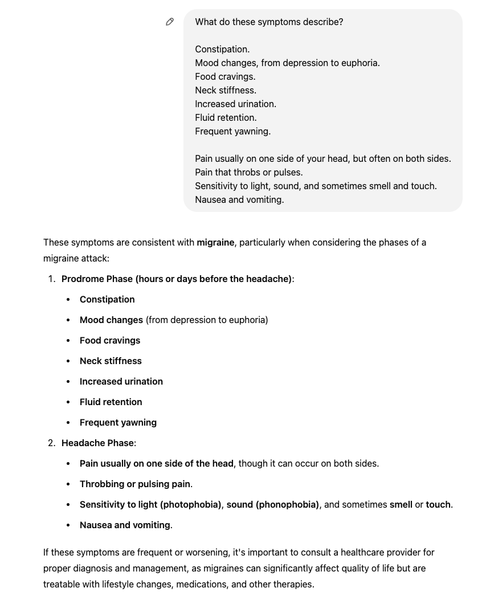
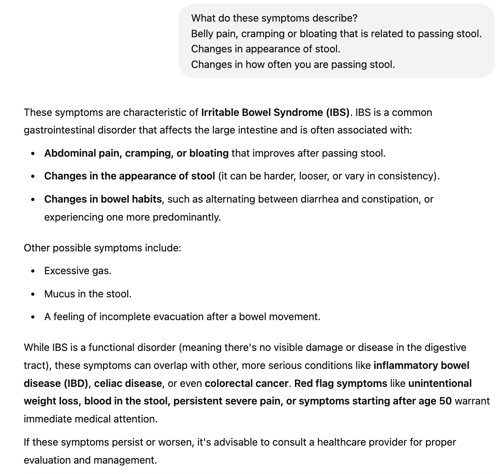

AI Doctor
In this post I will examine the ability of Chat GPT to perform key responsibilities of a doctor, mainly diagnosing and treating ilnneses and medical knowledge.
I will begin by researching diseases and illnesses and sharing the symptoms that commonly occur to Chat GPT. I will then ask it to identify what illness or disease it thinks I am describing.
Diagnosing Illness
For this test I used Mayo Clinic as my source for the symptoms of these different medical conditions. I used Chat GPT 4o as the model for answering questions about symtoms described.
The first condition I asked Chat GPT about was a Migraine.

As you can see, Chat GPT correcly identified it as a migraine. It also correctly identified the phases of the migraine which were consistant with those described on Mayo Clinic.
Next, I wanted to see if Chat GPT could correctly identify Irritable Bowel Syndrome, which can be hard to diagnose due to the symptoms being similar to other conditions such as having Celiac Disease.

Chat GPT correctly identified the symptoms as coming from IBS and even noted that the symptoms could overlap with other conditions, listing celiac disease as one of the conditions that has similar symptoms.
To further test it, I asked how it deteremined that the symptoms I asked about were not describing celiac disease.

Again, it was able to correctly identify the differences and its response aligned with Mayo Clinic’s article.
It seems that Chat GPT is able to correctly identify medical conditions, so I will move on to testing specific medical knowledge. I will give it a few questions from the United States Medical Licensing Examination, that come directly from the United States Medical Licensing Examination website. Each of the questions will come from a different section of the exam, as to test Chat GPT’s ability with different subjects.
Question 1
A 27-year-old woman comes to the office for counseling prior to conception. She states that a friend recently delivered a newborn with a neural tube defect and she wants to decrease her risk for having a child with this condition. She has no history of major medical illness and takes no medications. Physical examination shows no abnormalities. It is most appropriate to recommend that this patient begin supplementation with a vitamin that is a cofactor in which of the following processes?
Biosynthesis of nucleotides
Protein gamma glutamate carboxylation
- Scavenging of free radicals
Transketolation
Triglyceride lipolysis
Correct Answer : A
Chat GPT’s Answer: A
Question 2
A study is designed to evaluate the feasibility of acupuncture in children with chronic headaches. Sixty children with chronic headaches are recruited for the study. In addition to their usual therapy, all children are treated with acupuncture three times a week for 2 months. Which of the following best describes this study design?
Case-control
Case series
Crossover
Cross-sectional
Historical cohort
Randomized clinical trial
Correct Answer: B
Chat GPT’s Answer: B
Question 3
A 26-year-old woman comes to the physician with her husband for counseling prior to conception. Her mother and three of her five siblings have type 2 diabetes mellitus. She is 170 cm (5 ft 7 in) tall and weighs 82 kg (180 lb); BMI is 28 kg/m2. Her blood pressure is 148/84 mm Hg. Physical examination shows no other abnormalities. Her fasting serum glucose concentration is 110 mg/dL. Which of the following is the most appropriate initial statement by the physician?
“Let’s review ways you can optimize your own health before conceiving.”
“We should test you for islet cell antibodies before you try to conceive.”
“You can conceive right away since you are in good health.”
“You should avoid gaining weight during pregnancy because you are already overweight and at risk for type 2 diabetes mellitus.”
“You should have no problems with your pregnancy if you start insulin therapy.”
Correct Answer: A
Chat GPT’s Answer: A
Question 4
A 42-year-old nulligravid woman comes to the office because of a 1-year history of increasingly irregular vaginal bleeding and menstrual cramps. Previously, menses occurred at regular 28-day intervals and lasted 3 days with minimal cramping. During the past year, menstrual periods have occurred at 21- to 28-day intervals and lasted 10 to 12 days with increasingly severe pain. Use of acetaminophen and ibuprofen has provided minimal relief. She used an oral contraceptive from the age of 17 years to 40 years, but she discontinued use after she was diagnosed with deep venous thrombosis of the right lower extremity. She has no other history of serious illness and takes no medications. Her mother and sister underwent hysterectomy at the ages of 39 and 43 years, respectively, because of abnormal uterine bleeding. The patient is 163 cm (5 ft 4 in) tall and weighs 75 kg (165 lb); BMI is 28 kg/m2. Vital signs are within normal limits. Physical examination discloses an enlarged, irregularly shaped uterus with nodularity. Which of the following is the most likely cause of the patient’s symptoms?
Benign monoclonal tumors arising from smooth muscle cells
Endometrium growing into the myometrium
Endometrium growing outside the uterus
Failure of functional ovarian cysts to regress after the release of an ovum
Ovarian stromal cells dividing and multiplying rapidly
Correct Answer: A
Chat GPT’s Answer: A
Question 5
Patient Information Age: 6 years Sex Assigned at Birth: M Race/Ethnicity: unspecified Site of Care: office
The patient is brought by his mother because of a 1-month history of bleeding gums after brushing his teeth, increasingly severe muscle and joint pain, fatigue, and easy bruising. His mother says he has lost six baby teeth and has been irritable during this time. Use of acetaminophen has provided minimal relief of his pain. He has autism spectrum disorder. He is not toilet-trained. He has a 10-word vocabulary. Vital signs and oxygen saturation on room air are within normal limits. The patient appears alert but does not speak or make eye contact. Skin is pale and coarse. Examination of the scalp shows erythematous hair follicles. Dentition is poor, and gingivae bleed easily to touch. Multiple ecchymoses and petechiae are noted over the trunk and all extremities. There is marked swelling and tenderness to palpation of the elbow, wrist, knee, and ankle joints. He moves all extremities in a limited, guarded manner. Deep tendon reflexes are absent throughout. It is most appropriate to obtain specific additional history regarding which of the following in this patient?
Diet
Evidence of pica
Herbal supplementations
Lead exposure
Self-injurious behaviors
Correct Answer: A
Chat GPT Answer: A
Clearly, Chat GPT is knowledgeable about medical procedures and conditions. It also has the ability to recommend next steps when given certain medical information. It seems to have the ability to stand in as a doctor that you would talk to over the phone. While it cannot physically provide medical examinations and surgeries, it covers many of the textbook knowledge required by doctors. If there is developement in the area of the physical applications of Chat GPT I think this would be an interesting area where Chat GPT would excel in assisting doctors with procedures and reminding them of the implications of certain conditions.